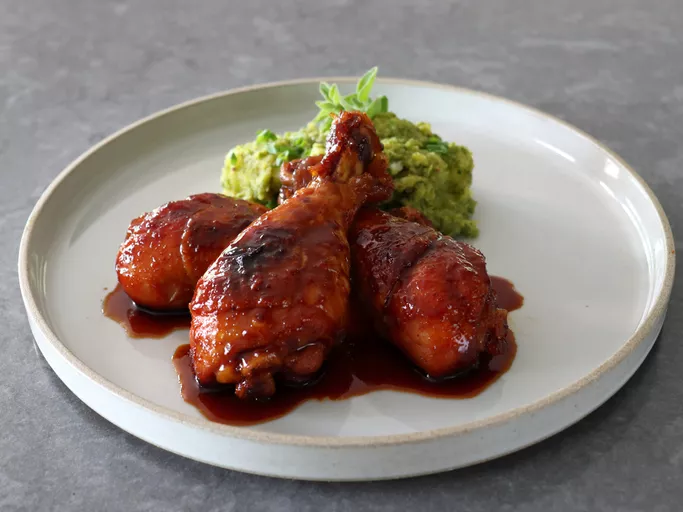

Hot Honey Drumsticks Recepie

Description
This is a very spicy recipe, so the quantities for the hot pepper components can be reduced for a milder final product.
There is just enough salt in the soy sauce to season the chicken; if you like things highly seasoned you can add another 1/2 teaspoon salt to the marinade.
Ingredients
- 10 chicken drumsticks
- 1 habanero pepper, seeded and halved
- 1/4 cup rice vinegar
- 1/3 cup soy sauce
- 1/2 cup honey
- 1 teaspoon garlic powder
- 1 teaspoon onion powder
- 1/2 teaspoon hot chili flakes
- 1/4 teaspoon cayenne pepper, or to taste
- 1 1/2 teaspoons Korean chili paste (gochujang)
- 2 tablespoons snipped fresh chives (optional)
Steps
- Transfer chicken drumsticks into a resealable plastic bag placed over a bowl.
- Add habanero pepper, rice vinegar, and soy sauce to a blender or blender cup, and blend on high for about 30 seconds. Transfer into a bowl.
- Add honey, garlic powder, onion powder, chili flakes, cayenne, and chili paste to the bowl and whisk until evenly combined.
- Pour marinade into the bag with chicken, and carefully massage the outside of the bag until drumsticks are evenly coated. Squeeze out excess air and seal the bag tightly.
- Marinate in the refrigerator for at least 2 hours and up to 10 hours for best results. (If necessary, chicken can be cooked immediately, but drumsticks will be more flavorful if marinated for a few hours.)
- Preheat the oven to 400 degrees F (200 degrees C). Transfer chicken and marinade into a casserole dish, and space drumsticks evenly into a single layer.
- Bake in the preheated oven for about 25 minutes; remove from the oven and turn chicken pieces over.
- Continue to bake drumsticks until meat is very tender and beginning to brown, about 45 minutes more; turn or baste drumsticks every 15 minutes.
- Remove drumsticks to a serving platter and cover loosely with foil. Carefully pour all the liquids from the roasting dish into a saucepan, and bring to a boil over medium-high heat. Cook sauce until it starts to thicken slightly, about 3 minutes.
- Spoon sauce over drumsticks. Scatter freshly snipped chives over chicken to serve.
Home